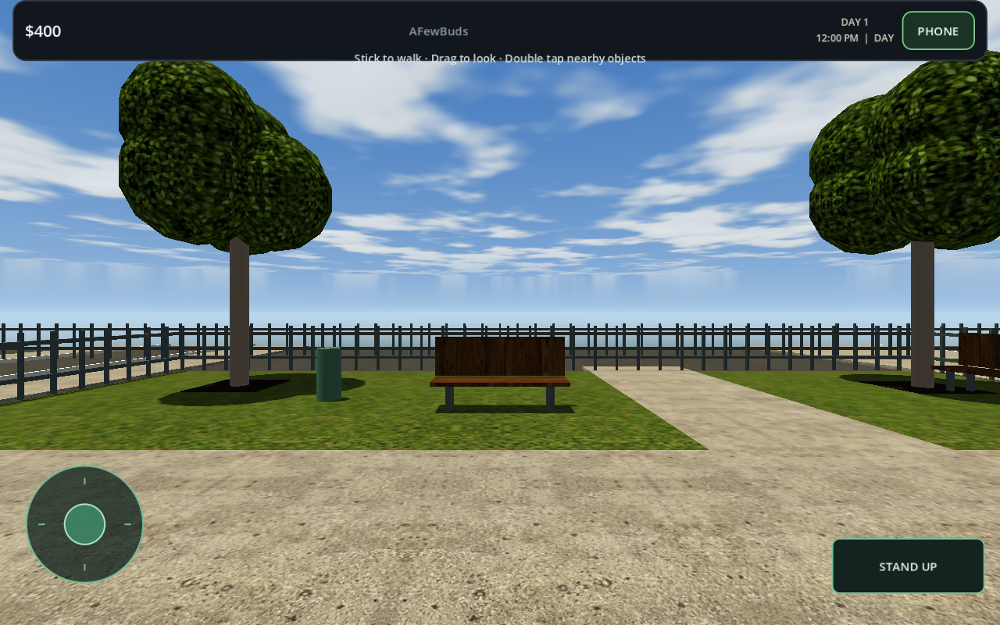
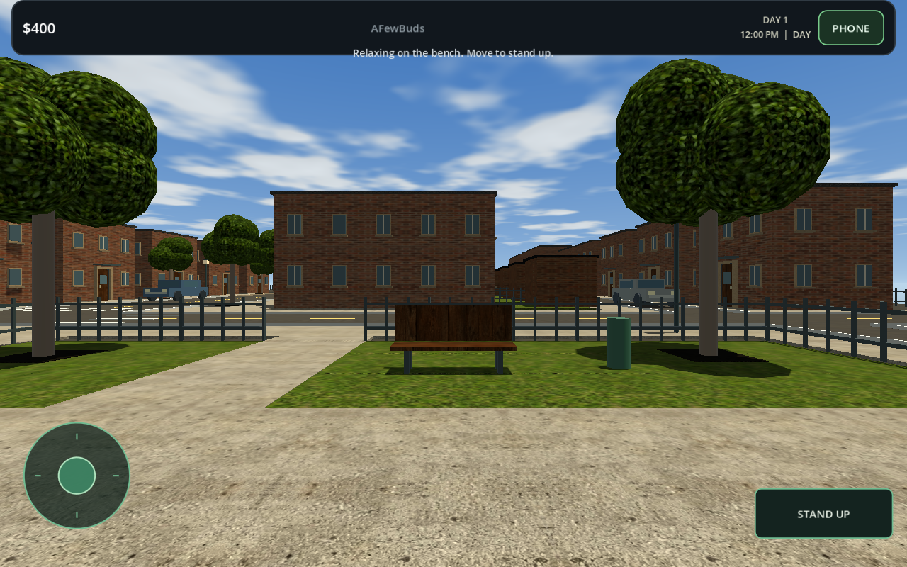
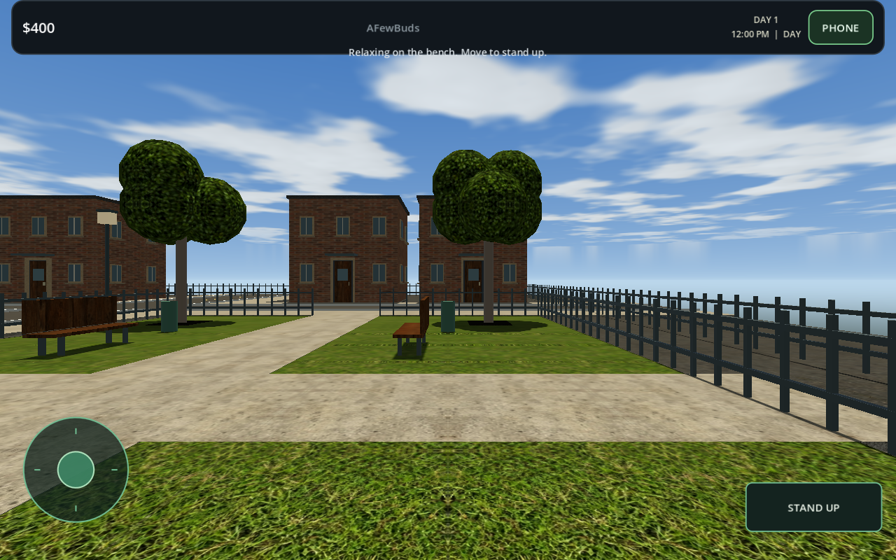
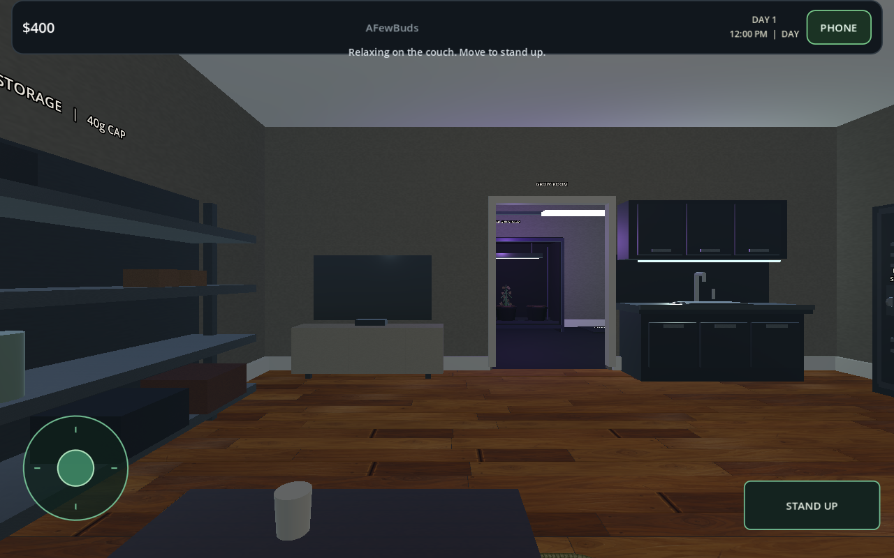
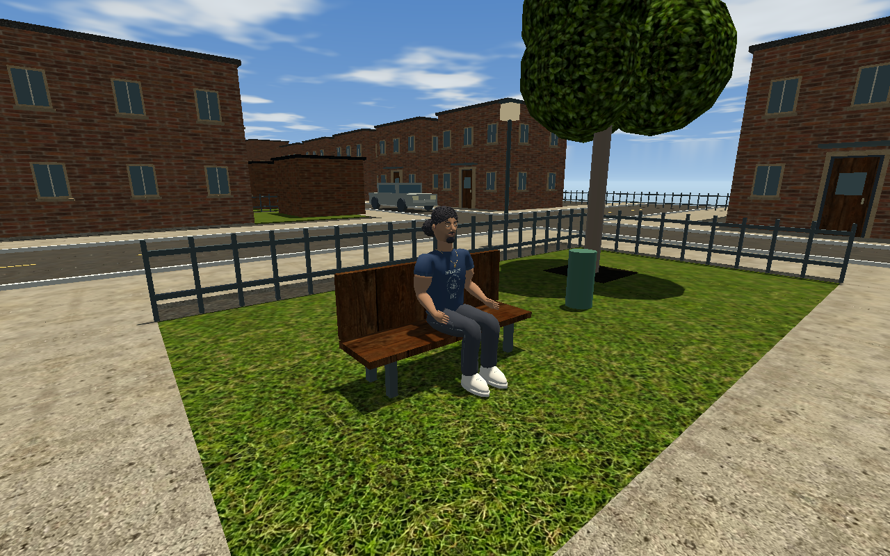

Park benches and seated camera
All three benches support Sit on bench and Stand up. Movement also stands up. The bench and couch cameras now match the shared rig's seated eyes at approximately 1.563 units.
Release .96-east.3. 55 seating checks, 113 character/furniture checks and 818 map checks pass. Rod is staged only for the reference image. Validation details.
West bench: seated view

East bench: seated view

South bench: seated view

Couch: corrected seated eyes

Staged Rod reference for seat and eye height
